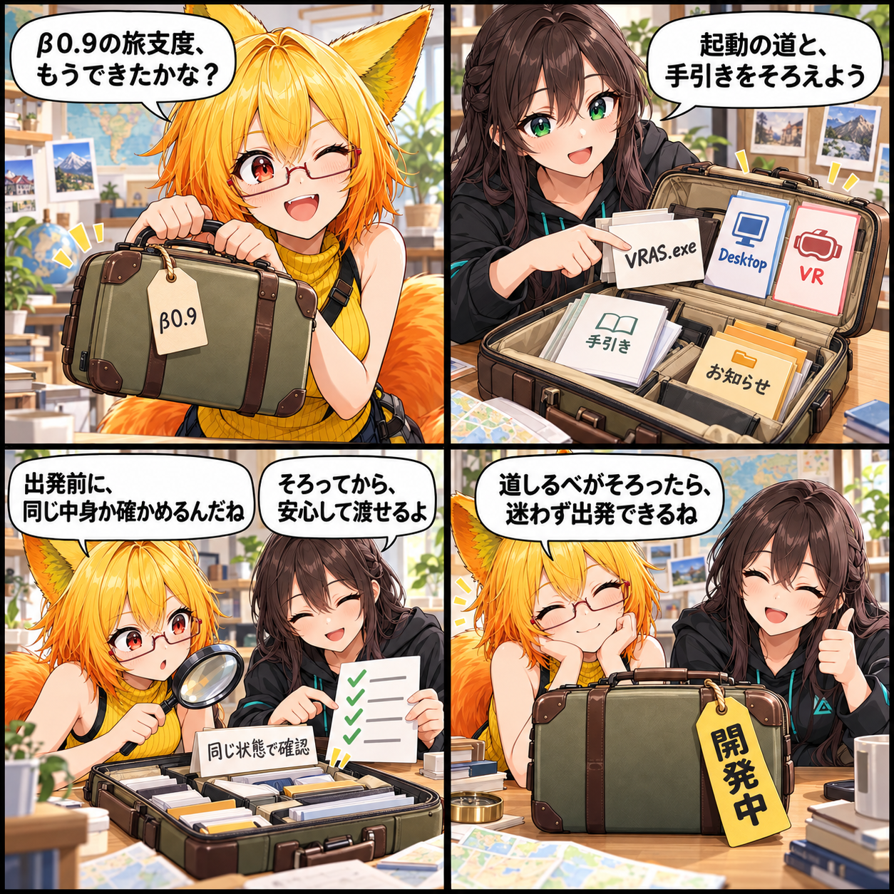

β0.9へ向けて、配るための道しるべをそろえる日
VRAS β0.9のWindows配布に向け、版数、起動方法、配布物、再現可能なビルドの確認条件を整えました。
02353dd90294eb32eed94eda74182b401b98555a、対象は4コミットです。未コミットの変更は含めていません。なおβ0.9は配布準備中であり、公開完了を表すものではありません。
配る前に、迷わない入口をそろえる
今回の主題は、VRAS β0.9のWindows配布へ向けた準備です。表示版数をβ0.9、内部版数を0.9.0へ進め、前回公開版をβ0.8として管理するようにしました。ただし、現在のrelease statusはdevelopmentです。この更新はβ0.9の公開完了ではなく、配る前に必要な道しるべを整える作業です。
配布物と起動方法を、ひとつの構成へ
配布フォルダにはVRAS.exeのほか、Desktop用・VR用の起動バッチ、操作マニュアル、更新履歴、BuildInfo、第三者ライセンス通知をそろえる構成を整えました。起動バッチは対象の実行ファイルを明示し、DesktopまたはVRモードで起動します。診断時に探すログの場所も案内するため、使い始めるときの入口を分けつつ、迷いにくくします。
正式配布は、同じ状態を確かめてから
正式な配布ビルドでは、公開状態、更新履歴の日付、PlayerSettingsの同期、Git作業ツリーがクリーンであることを確認するGuardを追加しました。ビルドの前後で同じコミット・同じ作業状態を保てているかも確認します。配布用の出力を再現可能な状態に寄せ、開発中の差分が混ざったまま渡らないための条件です。
ほかにも、操作の流れを整える
同じ集計期間には、スタジオのシーン保存・読込をライブラリへ移し、ポーズ・アニメ上段メニューとVAC編集への遷移を修正しました。移動・歩行の経路編集では、地点追加操作もひとつの流れへ統合しています。配布の外枠だけでなく、日常的に触る操作の経路も見直した更新です。
4コマの裏話
今回は旅行かばんを配布フォルダに見立てました。中身と経路がそろっても、かばんには「開発中」の札が残っています。整えることと、実際に公開することを混同しないための、静かな出発前の場面です。
まとめ
β0.9へ向けて、版数、配布物、起動方法、再現可能なビルドの確認条件を整えました。正式配布は必要な公開条件を満たしてから行うものとして、準備と公開を区別しながら進めています。
本日のひとこと
出発の前に、迷わない地図を入れておこう。